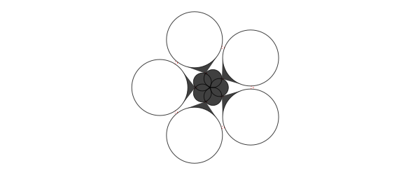
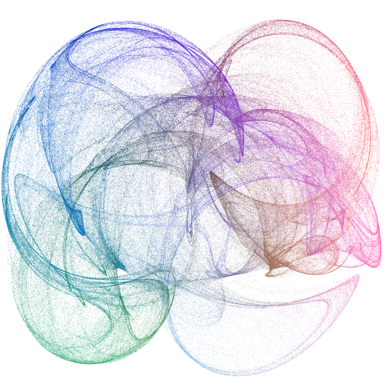
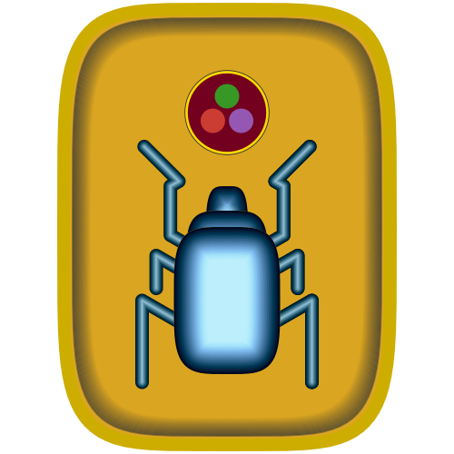
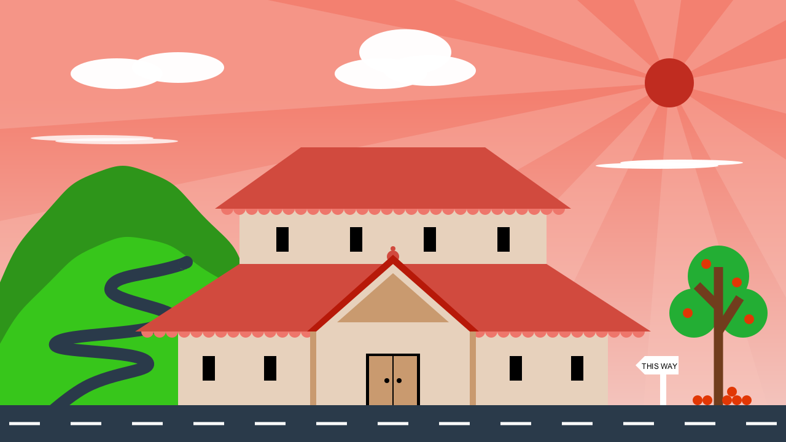

More examples
One place to look for examples is the Luxor/test directory.

Illustrating this document
This documentation was built with Documenter.jl, which is an amazingly powerful and flexible documentation generator written in Julia. The illustrations are mostly created when the HTML pages are built: the Julia source for the image is stored in the Markdown source document, and the code to create the images runs each time the documentation is generated.
The Markdown markup looks like this:
```@example
using Luxor, Random # hide
Drawing(600, 250, "assets/figures/polysmooth-pathological.png") # hide
origin() # hide
background("white") # hide
setopacity(0.75) # hide
Random.seed!(42) # hide
setline(1) # hide
p = star(O, 60, 5, 0.35, 0, vertices=true)
setdash("dot")
sethue("red")
prettypoly(p, close=true, :stroke)
setdash("solid")
sethue("black")
polysmooth(p, 40, :fill, debug=true)
finish() # hide
```
and after you run Documenter's build process the HTML output looks like this:
p = star(O, 60, 5, 0.35, 0, vertices=true)
setdash("dot")
sethue("red")
prettypoly(p, close=true, :stroke)
setdash("solid")
sethue("black")
polysmooth(p, 40, :fill, debug=true)
Why turtles?
An interesting application for turtle-style graphics is for drawing Lindenmayer systems (l-systems). Here's an example of how a complex pattern can emerge from a simple set of rules, taken from Lindenmayer.jl:

The definition of this figure is:
penrose = LSystem(Dict("X" => "PM++QM----YM[-PM----XM]++t",
"Y" => "+PM--QM[---XM--YM]+t",
"P" => "-XM++YM[+++PM++QM]-t",
"Q" => "--PM++++XM[+QM++++YM]--YMt",
"M" => "F",
"F" => ""),
"1[Y]++[Y]++[Y]++[Y]++[Y]")where some of the characters—eg "F", "+", "-", and "t"—issue turtle control commands, and others—"X,", "Y", "P", and "Q"—refer to specific components of the design. The execution of the l-system involves replacing every occurrence in the drawing code of every dictionary key with the matching values.
Strange
It's usually better to draw fractals and similar images using pixels and image processing tools. But just for fun it's an interesting experiment to render a strange attractor image using vector drawing rather than placing pixels. This version uses about 600,000 circular dots (which is why it's better to target PNG rather than SVG or PDF for this example!).
using Luxor, Colors
function strange(dotsize, w=800.0)
xmin = -2.0; xmax = 2.0; ymin= -2.0; ymax = 2.0
Drawing(w, w, "assets/figures/strange-vector.png")
origin()
background("white")
xinc = w/(xmax - xmin)
yinc = w/(ymax - ymin)
# control parameters
a = 2.24; b = 0.43; c = -0.65; d = -2.43; e1 = 1.0
x = y = z = 0.0
wover2 = w/2
for j in 1:w
for i in 1:w
xx = sin(a * y) - z * cos(b * x)
yy = z * sin(c * x) - cos(d * y)
zz = e1 * sin(x)
x = xx; y = yy; z = zz
if xx < xmax && xx > xmin && yy < ymax && yy > ymin
xpos = rescale(xx, xmin, xmax, -wover2, wover2) # scale to range
ypos = rescale(yy, ymin, ymax, -wover2, wover2) # scale to range
rcolor = rescale(xx, -1, 1, 0.0, .7)
gcolor = rescale(yy, -1, 1, 0.2, .5)
bcolor = rescale(zz, -1, 1, 0.3, .8)
setcolor(convert(Colors.HSV, Colors.RGB(rcolor, gcolor, bcolor)))
circle(Point(xpos, ypos), dotsize, :fill)
end
end
end
finish()
end
strange(.3, 800)
More animations

Most of the animations on this YouTube channel are made with Luxor.
The Luxor logo
using Luxor, Colors
function multistrokepath(lightness, chroma, hue)
# takes the current path and multistrokes it
@layer begin
for n in 1:2:15
sethue(LCHab(5n, chroma, hue))
setline(rescale(n, 1, 15, 15, 1))
strokepreserve()
end
end
end
function multifillpath(lightness, chroma, hue)
# takes the current path and multifills it
@layer begin
p = pathtopoly()[1]
for n in 0:2:40
sethue(LCHab(3n, chroma + n/2, hue))
setopacity(rescale(n, 1, 40, 1, 0.1))
poly(offsetpoly(p, -n), :fill, close=true)
end
end
end
function scarab(pos)
@layer begin
translate(pos)
setline(15)
setlinecap("round")
setlinejoin("round")
#legs
@layer begin
for i in 1:2
# right front leg
move(O)
rline.((polar(80, -π/6),
polar(60, -π/2),
polar(12, -5π/6),
polar(60, -π/4)))
#middle leg
move(0, 35)
rline.((
polar(100, -π/6),
polar(40, π/2)))
#back leg
move(0, 100)
rline.((polar(120, -π/6),
polar(100, π/2)))
multistrokepath(50, 20, 240)
# other side
transform([-1 0 0 1 0 0])
end
# body
@layer begin
squircle(Point(0, -25), 26, 75, :fillpreserve)
multifillpath(60, 20, 260)
squircle(Point(0, 0), 50, 70, :fillpreserve)
multifillpath(60, 20, 260)
squircle(Point(0, 40), 65, 90, :fillpreserve)
multifillpath(60, 20, 260)
end
end
end
end
function draw()
Drawing(500, 500, "assets/figures/luxor-logo.png")
origin()
background(1, 1, 1, 0)
setopacity(1.0)
width = 180
height= 240
# cartouche
@layer begin
setcolor("goldenrod")
squircle(O, width, height, rt=0.4, :fill)
end
sethue("gold3")
setline(14)
squircle(O, width, height, rt=0.4, :stroke)
# interior shadow
@layer begin
sethue("grey20")
setline(2)
for n in 10:30
setopacity(rescale(n, 10, 30, 0.5, 0.0))
squircle(O, width-n, height-n, rt=0.4, :stroke)
end
end
# draw scarab
scale(0.9)
translate(0, 50)
scarab(O)
# julia/sun
@layer begin
translate(0, -190)
sethue("grey20")
circle(O, 52, :fill)
sethue("gold")
circle(O, 51, :fill)
sethue(LCHab(20, 55, 15))
circle(O, 48, :fill)
juliacircles(20)
end
clipreset()
finish()
end
draw()
A Japanese-style Temple scene
This code was created by kfung, a student that participated in Google Code-in 2019 competition.
using Luxor
Drawing(1280, 720, "assets/figures/temple.png")
origin()
setblend(blend(Point(0, -200), Point(0, 300), "#F38070", "#F3C3BC"))
box(O, 1280, 720, :fill)
sethue("#F7C5BC")
setopacity(0.3)
sun = Point(450, -225)
poly([sun, Point(400, 400), Point(640, 400), sun], :fill)
poly([sun, Point(-150, 400), Point(150, 400), sun], :fill)
poly([sun, Point(-640, 400), Point(-640, 0), sun], :fill)
poly([sun, Point(-640, -150), Point(-640, -450), sun], :fill)
poly([sun, Point(100, -360), Point(300, -360), sun], :fill)
poly([sun, Point(375, -400), Point(475, -400), sun], :fill)
poly([sun, Point(585, -400), Point(775, -400), sun], :fill)
poly([sun, Point(640, -265), Point(640, -175), sun], :fill)
poly([sun, Point(640, -100), Point(640, 125), sun], :fill)
sethue("#C02C20")
setopacity(1)
circle(450, -225, 40, :fill)
sethue("white")
setopacity(0.98)
ellipse(20, -275, 150, 75, :fill)
ellipse(-20, -240, 150, 50, :fill)
ellipse(60, -245, 150, 50, :fill)
ellipse(-450, -240, 150, 50, :fill)
ellipse(-350, -250, 150, 50, :fill)
ellipse(430, -90, 200, 10, :fill)
ellipse(470, -95, 200, 10, :fill)
setopacity(0.8)
ellipse(-450, -130, 200, 10, :fill)
ellipse(-490, -135, 200, 10, :fill)
setopacity(1)
sethue("#2E951A")
drawbezierpath(makebezierpath([Point(-780, 500), Point(-640, 100), Point(-560, -20), Point(-480, -80), Point(-400, -80), Point(-320, -20), Point(-240, 100), Point(-240, 500)]), :fill, close=false)
sethue("#37C61B")
drawbezierpath(makebezierpath([Point(-780, 500), Point(-640, 200), Point(-560, 100), Point(-480, 40), Point(-400, 30), Point(-320, 70), Point(-240, 150), Point(-240, 500)]), :fill, close=false)
sethue("#23AE34")
setopacity(1)
ellipse(530, 90, 100, 100, :fill)
ellipse(490, 150, 80, 80, :fill)
ellipse(570, 150, 80, 80, :fill)
sethue("#713D1D")
box(530, 220, 15, 290, :fill)
setline(15)
line(Point(530,180), Point(565, 125), :stroke)
line(Point(530,140), Point(495, 105), :stroke)
sethue("#E13705")
circle(480, 150, 8, :fill)
circle(560, 100, 8, :fill)
circle(510, 70, 8, :fill)
circle(580, 160, 8, :fill)
[circle(544+16*(i-1), 292, 8, :fill) for i in 1:3]
circle(552, 278, 8, :fill)
circle(512, 292, 8, :fill)
circle(496, 292, 8, :fill)
sethue("white")
setline(10)
line(Point(440, 300), Point(440, 250), :stroke)
poly([Point(410, 250), Point(395, 235), Point(410, 220), Point(465, 220), Point(465, 250)], :fill)
sethue("black")
fontsize(12)
fontface("Arial")
text("THIS WAY", Point(434, 241), halign=:center, valign = :center)
setopacity(1)
sethue("#2A3A4A")
box(0, 330, 1280, 60, :fill)
setline(20)
setopacity(1)
drawbezierpath(makebezierpath([Point(-570, 320), Point(-500, 270), Point(-400, 230), Point(-550, 200), Point(-360, 160), Point(-460, 110), Point(-342, 70), Point(-340, 70)]), :stroke, close=false)
circle(-340, 69, 10, :fill)
circle(-336, 67, 10, :fill)
setopacity(1)
sethue("white")
[box(-600+100*(i-1), 330, 50, 5, :fill) for i in 1:13]
sethue("#E7D1BC")
box(0, 240, 700, 120, :fill)
box(0, 150, 300, 120, :fill)
box(0, 40, 500, 120, :fill)
sethue("#EE766B")
[circle((-400+20*(i-1)), 180, 10, :fill) for i in 1:41]
[circle((-270+20*(i-1)), -20, 10, :fill) for i in 1:28]
sethue("#D14A3E")
poly([Point(-420, 180), Point(420, 180), Point(250, 70), Point(-250, 70), Point(-420, 180)], :fill)
poly([Point(-290, -20), Point(290, -20), Point(150, -120), Point(-150, -120), Point(-290, -20)], :fill)
circle(0, 58, 10, :fill)
circle(0, 45, 4, :fill)
sethue("#B71909")
poly([Point(0, 55), Point(140, 180), Point(-140, 180), Point(0, 55)], :fill)
sethue("#E7D1BC")
poly([Point(0, 70), Point(159, 210), Point(-159, 210), Point(0, 70)], :fill)
sethue("black")
[box(-180+120*(i-1), 30, 20, 40, :fill) for i in 1:4]
box(-300, 240, 20, 40, :fill)
box(-200, 240, 20, 40, :fill)
box(200, 240, 20, 40, :fill)
box(300, 240, 20, 40, :fill)
sethue("#C99A6F")
box(-130, 240, 10, 120, :fill)
box(130, 240, 10, 120, :fill)
poly([Point(0, 85), Point(91, 165), Point(-91, 165), Point(0, 85)], :fill)
sethue("black")
box(0, 258, 88, 84, :fill)
sethue("#C99A6F")
box(-20, 260, 38, 80, :fill)
box(20, 260, 38, 80, :fill)
sethue("black")
circle(-10, 260, 4, :fill)
circle(10, 260, 4, :fill)
finish()